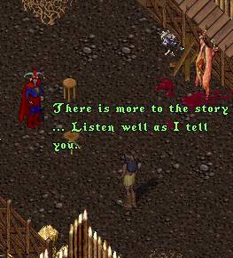

Many years ago before you were born, a strange man came to our village. He was not like the others who had come to the New Lands before him. He was a kind and gentle man, and finding him near starvation on a path near here we took him in and fed him and made him well. Our village had suffered badly with the arrival of the strangers to this place they call the New Lands, our menfolk took sick with a deadly plague and all of them died. We asked this man known to us as ImaNewbie if he could stay and make us with child lest our village perish. He was most accommodating in that regard and when he left many of the village women found that they were in fact heavy with his offspring. Some months later you were born to me. I have recently heard rumors that your father has been captured by the evil forces that govern the old lands and is being held in prison. Now that you have grown to manhood, I feel that you must honor your father, even though he deserted us, and go forth into the Old Lands to rescue him.
 |
There is more to this story that I must relate to you. Unlike the other children born of this man, you were the first born in the village and there was something very different about you. At a very early age you began to show strength and knowledge that was almost superhuman. Possibly it had something to do with the combining of his seed with our life force but nevertheless when you could barely walk, you could lift ten times your weight. I feared that you would be ridiculed by the other children for being different and tried to curb your use of your strength and powers. Then one day while we were searching for fruit or berries near the mountains I came upon a strange glowing green crystal. I thought is was pretty and gave it to you, but when I did I noticed your strength and energy seemed to be draining away. I broke the crystal into small pieces and experimented until I found the size that took away much of your strength and power but left you with about the same as the other children your age. That piece of crystal I placed in a small bag around your neck which you have worn till this day. By removing it to change into your new clothes you have removed the restrictions it placed on you. You will find that you now have the strength of many men, and that all your senses are heightened as well. Learn to use and control these powers, my son, but always remember that they must only be used for good and against the evil people that you will encounter in your journeys. That is all I can tell you, now go forth to the Old Lands and seek out your father, the man they call ImaNewbie.